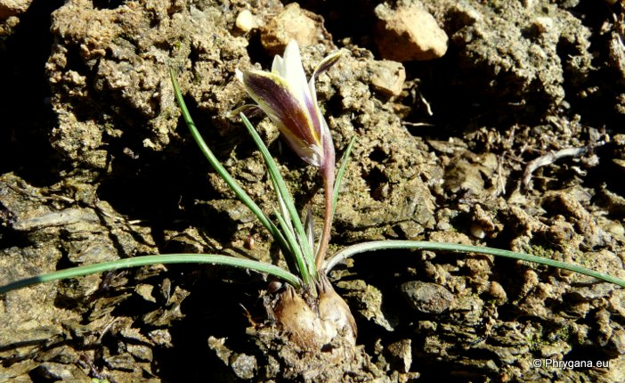

| PHRYGANA | Fauna | Flora | Galles | liste des espèces |
contact -
info - commentaires phrygana1 (at) gmail.com |
| Particularités crétoises | nouveautés | Mines | ressources naturelles |
| Romulea bulbocodium (L.) SEBAST. & MAURI var. bulbocodium |
| 318 | Flora | IRIDACEAE | Romulea MARATTI. |
|
Romulea bulbocodium Dhamnoni bay (Plakias) 22 janvier 2012 |
| Feuilles: étroites (50 -150 x 0.8 - 2 mm), vert foncé | |
| Bulbe: ovoïde de 1 - 2 cm, brun foncé | |
| Fleurs: petites (diamètre 25 - 30 mm), de 1 à 4 (-6), souvent solitaires, blanches (souvent rayées de violet) à lilas, parfois violettes, avec une gorge jaune; tépales elliptiques, pointus, longs de 20 -35 mm; style et stigmates blancs dépassant les étamines jaune or; bractées vertes avec une marge scarieuse (10 -20 mm); bractéoles scarieuses brunâtres à rougeâtres | |
| Fruit: capsule oblongue; graines lisses, globuleuses, luisantes, brun rougeâtre | |
| Hauteur: 3 - 15 cm | Type biologique: géophyte bulbeux |
| Floraison: janvier février mars avril | |
| Altitudes: 0 - 1250 m | |
| Statut en Crète: indigène | |
| Biotopes en Crète: phrygana, talus, terrains en friche, dépressions limoneuses | |
| Distribution: région Méditerranéenne | |
| Belgique: absent | |
| Note: Romulea bulbocodium (L.) SEBAST. & MAURI peut parfois former des colonies importantes | |
|
Romulea bulbocodium Dhamnoni bay (Plakias) 22 janvier 2012 |
|
Romulea bulbocodium Dhamnoni bay (Plakias) 22 janvier 2012 |
|
Romulea bulbocodium Dhamnoni bay (Plakias) 22 janvier 2012 |
|
Romulea bulbocodium Dhamnoni bay (Plakias) 22 janvier 2012 |
|
 Romulea bulbocodium Dhamnoni bay (Plakias) 22 janvier 2012 |
|
Romulea bulbocodium Giorgiopouli plage- Dzougari 01 février 2013 |
|
Romulea bulbocodium Giorgiopouli plage- Dzougari 01 février 2013 |
|
Romulea bulbocodium Giorgiopouli plage- Dzougari 01 février 2013 |
| 16 février 2013 |
| © paul fontaine -- © Phrygana.eu 2007 -- 2013 |